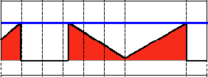

Basic Thresholding Operations
Goal
In this tutorial you will learn how to:
- Perform basic thresholding operations using OpenCV function cv::threshold
Cool Theory
The explanation below belongs to the book Learning OpenCV by Bradski and Kaehler. What is
Thresholding?
The simplest segmentation method
Application example: Separate out regions of an image corresponding to objects which we want to analyze. This separation is based on the variation of intensity between the object pixels and the background pixels.
To differentiate the pixels we are interested in from the rest (which will eventually be rejected), we perform a comparison of each pixel intensity value with respect to a threshold (determined according to the problem to solve).
Once we have separated properly the important pixels, we can set them with a determined value to identify them (i.e. we can assign them a value of \(0\) (black), \(255\) (white) or any value that suits your needs).

Types of Thresholding
OpenCV offers the function cv::threshold to perform thresholding operations.
We can effectuate \(5\) types of Thresholding operations with this function. We will explain them in the following subsections.
To illustrate how these thresholding processes work, let’s consider that we have a source image with pixels with intensity values \(src(x,y)\). The plot below depicts this. The horizontal blue line represents the threshold \(thresh\) (fixed).

Threshold Binary
This thresholding operation can be expressed as:
\[\texttt{dst} (x,y) = \fork{\texttt{maxVal}}{if \(\texttt{src}(x,y) > \texttt{thresh}\)}{0}{otherwise}\]So, if the intensity of the pixel \(src(x,y)\) is higher than \(thresh\), then the new pixel intensity is set to a \(MaxVal\). Otherwise, the pixels are set to \(0\).

Threshold Binary, Inverted
This thresholding operation can be expressed as:
\[\texttt{dst} (x,y) = \fork{0}{if \(\texttt{src}(x,y) > \texttt{thresh}\)}{\texttt{maxVal}}{otherwise}\]If the intensity of the pixel \(src(x,y)\) is higher than \(thresh\), then the new pixel intensity is set to a \(0\). Otherwise, it is set to \(MaxVal\).

Truncate
This thresholding operation can be expressed as:
\[\texttt{dst} (x,y) = \fork{\texttt{threshold}}{if \(\texttt{src}(x,y) > \texttt{thresh}\)}{\texttt{src}(x,y)}{otherwise}\]The maximum intensity value for the pixels is \(thresh\), if \(src(x,y)\) is greater, then its value is truncated. See figure below:

Threshold to Zero
This operation can be expressed as:
\[\texttt{dst} (x,y) = \fork{\texttt{src}(x,y)}{if \(\texttt{src}(x,y) > \texttt{thresh}\)}{0}{otherwise}\]If \(src(x,y)\) is lower than \(thresh\), the new pixel value will be set to \(0\).

Threshold to Zero, Inverted
This operation can be expressed as:
\[\texttt{dst} (x,y) = \fork{0}{if \(\texttt{src}(x,y) > \texttt{thresh}\)}{\texttt{src}(x,y)}{otherwise}\]If \(src(x,y)\) is greater than \(thresh\), the new pixel value will be set to \(0\).

Code
The tutorial code’s is shown lines below. You can also download it from here
#include "opencv2/imgproc.hpp" #include "opencv2/imgcodecs.hpp" #include "opencv2/highgui.hpp" using namespace cv; int threshold_value = 0; int threshold_type = 3; int const max_value = 255; int const max_type = 4; int const max_BINARY_value = 255; Mat src, src_gray, dst; const char* window_name = "Threshold Demo"; const char* trackbar_type = "Type: \n 0: Binary \n 1: Binary Inverted \n 2: Truncate \n 3: To Zero \n 4: To Zero Inverted"; const char* trackbar_value = "Value"; void Threshold_Demo( int, void* ); int main( int, char** argv ) { src = imread( argv[1], IMREAD_COLOR ); // Load an image if( src.empty() ) { return -1; } cvtColor( src, src_gray, COLOR_BGR2GRAY ); // Convert the image to Gray namedWindow( window_name, WINDOW_AUTOSIZE ); // Create a window to display results createTrackbar( trackbar_type, window_name, &threshold_type, max_type, Threshold_Demo ); // Create Trackbar to choose type of Threshold createTrackbar( trackbar_value, window_name, &threshold_value, max_value, Threshold_Demo ); // Create Trackbar to choose Threshold value Threshold_Demo( 0, 0 ); // Call the function to initialize for(;;) { char c = (char)waitKey( 20 ); if( c == 27 ) { break; } } } void Threshold_Demo( int, void* ) { /* 0: Binary 1: Binary Inverted 2: Threshold Truncated 3: Threshold to Zero 4: Threshold to Zero Inverted */ threshold( src_gray, dst, threshold_value, max_BINARY_value,threshold_type ); imshow( window_name, dst ); }
Explanation
Let’s check the general structure of the program:
Load an image. If it is BGR we convert it to Grayscale. For this, remember that we can use the function cv::cvtColor :
src = imread( argv[1], IMREAD_COLOR ); // Load an image if( src.empty() ) { return -1; } cvtColor( src, src_gray, COLOR_BGR2GRAY ); // Convert the image to Gray
Create a window to display the result
namedWindow( window_name, WINDOW_AUTOSIZE ); // Create a window to display results
Create \(2\) trackbars for the user to enter user input:
Type of thresholding : Binary, To Zero, etc…
Threshold value
createTrackbar( trackbar_type, window_name, &threshold_type, max_type, Threshold_Demo ); // Create Trackbar to choose type of Threshold createTrackbar( trackbar_value, window_name, &threshold_value, max_value, Threshold_Demo ); // Create Trackbar to choose Threshold value
Wait until the user enters the threshold value, the type of thresholding (or until the program exits)
Whenever the user changes the value of any of the Trackbars, the function Threshold_Demo is called:
void Threshold_Demo( int, void* ) { /* 0: Binary 1: Binary Inverted 2: Threshold Truncated 3: Threshold to Zero 4: Threshold to Zero Inverted */ threshold( src_gray, dst, threshold_value, max_BINARY_value,threshold_type ); imshow( window_name, dst ); }
As you can see, the function cv::threshold is invoked. We give \(5\) parameters:
- src_gray : Our input image
- dst : Destination (output) image
- threshold_value : The \(thresh\) value with respect to which the thresholding operation is made
- max_BINARY_value : The value used with the Binary thresholding operations (to set the chosen pixels)
- threshold_type : One of the \(5\) thresholding operations. They are listed in the comment section of the function above.
Results
After compiling this program, run it giving a path to an image as argument. For instance, for an input image as:

First, we try to threshold our image with a binary threhold inverted. We expect that the pixels brighter than the \(thresh\) will turn dark, which is what actually happens, as we can see in the snapshot below (notice from the original image, that the doggie’s tongue and eyes are particularly bright in comparison with the image, this is reflected in the output image).

Now we try with the threshold to zero. With this, we expect that the darkest pixels (below the threshold) will become completely black, whereas the pixels with value greater than the threshold will keep its original value. This is verified by the following snapshot of the output image: